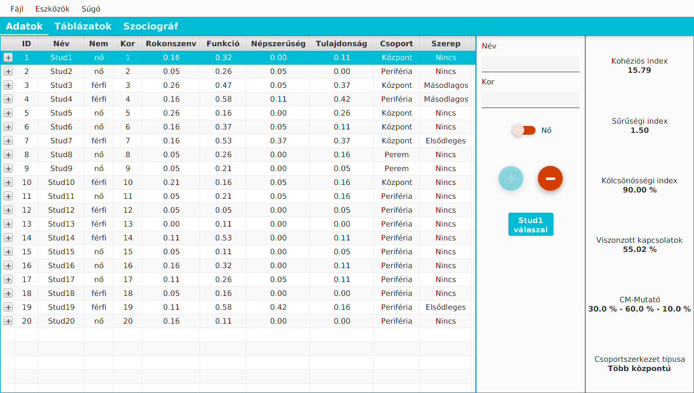
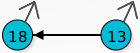
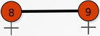
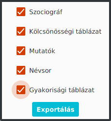

Ingyenes szociometriai szoftver

Alapvető funkciók
A szofver a következő alapvető funckókkal rendelkezik:
- A vizsgált csoport kapcsolatrendszerének ábrázolása szociográfon
- A csoportkohéziós mutatók meghatározása
- A csoportlégkör mutatójának meghatározása
- A központ és perem viszonyát kifejező centrális-marginális mutatók meghatározása
- Kölcsönösségi, illetve Gyakorisági táblázat létrehozása
Emellett lehetőség van egyedi kérdőívek létrehozására, valamint ezek PDF formátumba való exportálására, tehát a felhasználó által meghatározott kérdések segítségével végezhető el a szociometriai felmérés.
Adatok bevitele
A személyi adatok bevitele
A felmérésben résztvevő személyekről csak a következő adatokat szükséges megadni:
- Név
- Életkor
- Nem
Ez az "Adatok" fül megfelelő mezőinek kitöltésével lehetséges.
Az adatok szerkesztése
Ez a táblázat első oszlopában lévő gombbal lenyitható menü segítségével lehetséges.
A felmérésben szereplő kérdések bevitele
A felmérés elvégzéséhez szükség van a kérdőívben is szereplő kérdések betöltésére. Ez korábban létrehozott kérdések megnyitásával, illetve a kérdés szerkesztő használatával valósítható meg.
Korábban elmentett kérdések betöltése
Erre a Fájl menü Kérdések importálása menüpontja ad lehetőséget. Mivel új kérdéssor megnyitása során a már felvitt kérdések mellett a megadott válaszok is törlődnek, célszerű ezt a lépést rögtön a személyek felvitele után - vagy az előtt - elvégezni.
Ezek után a betöltött kérdéssor nyomtatás céljából elmenthető PDF formátumban, az Eszközök menü Kérdőív exportálása PDF-be menüpontjával.
A kérdés szerkesztő használata
A kérdés szerkesztő nyújt lehetőséget egyedi kérdéssor létrehozására, valamint az ehhez tartozó kérdőív kinyomtatására. A funkció az Eszközök menü Kérdés szerkesztő menüpontjából érhető el.
A megnyíló ablakban a gomb megnyomásával adható hozzá új kérdés a listához, a gombbal pedig törölhető a legutolsó kérdés.
A felső eszköztáron lévő gombok funckiója a következő:
-
Mentés: A begépelt kérdések mentése csv formátumban. Ez lehetőséged ad későbbi betöltésre egy másik felmérés esetében.
-
Megnyitás: Korábban elmentett csv formátumú kérdések megnyitása szerkesztésre. Ilyenkor a kérdések még nem adódnak hozzá a jelenlegi fájlhoz.
-
Betöltés: Az előzőleg már megnyitott, a fájl által tartalmazott kérdések betöltése. A gomb csak akkor aktív, ha előzőleg már lettek megnyitva kérdések.
-
Hozzáadás: A jelenleg szerkesztés alatt álló kérdések hozzáadása a megnyitott fájlhoz. Ha a fájl már tartalmaz kérdéseket, azok felülírásra kerülnek a válaszokkal együtt (mivel azok más kérdésekre vonatkoztak).
-
Exportálás: A kérdésekből kérdőív generálása, és elmentése PDF formátumba.
A , és funckiók csak megfelelően kitöltött kérdések esetén működnek. Minden kérdésnek rendelkeznie kell szöveggel és típussal is.
A Hozzáadás funckiót olyan esetben érdemes használni, ha egy olyan csoporton végzünk felmérést, ami korábban már volt vizsgálva. Tehát olyan esetben, amikor a csoport nem, vagy csak kis mértékben változott, a kérdések viszont már nem feltétlenül egyeznek meg a korábbiakkal. Ekkor a válaszok is törlődnek, mivel azok az új felmérésnél már nem relevánsak.
Az űrlapok kinyomtatása, és kitöltetése után végezhető el a felmérésben résztvevők válaszainak megadása.
A válaszok megadása
Ha rendelkezésre állnak a kitöltött űrlapok megkezdhető a válaszok bevitele a korábban már létrehozott fájlba. Ez a táblázatban a megfelelő személy sorának kiválasztásával, majd a (Személy Neve) válaszai gombra való kattintással megnyíló ablakban végezhető el.
A kérdőívben szereplő kérdésekre a három legördülő menü segítségével adhatóak meg a válaszok.
- A kérdések között a és a gombokkal lehet lépkedni.
- Az gombbal törölhető egy hibásan megadott válasz.
A generált adatok értelmezése
Az "Adatok" fül
Az Adatok fülön a felhasználó által bevitt adatok mellett számos fontos információ található.
A táblázat adatainak értelmezése
-
ID: a felhasználó azonosítója, ami a Táblázatok, illetve a Szociográf füleken is látható.
-
Rokonszenv, Funkció, Népszerűség és Tulajdonság oszlopok: Egy arányszám, ami megmutatja, hogy az adott személyt hányan választották az adott típusú kérdésre válaszként. Értéke 1, ha a személyt a csoport összes többi tagja megválasztolta az adott típusú kérdésre.
-
Csoport oszlop: Megmutatja, hogy az adott személy a Centrális-Marginális mutató szerint milyen pozícióval rendelkezik a csoporton belül. Jelen esetben a Köztes jelenti a központtal közvetlen, vagy közvetett kapcsolattal rendelkezőket, a Perem pedig a központtal kapcsolatban nem lévő személyeket. A Központ értelemszerűen a központ részét képező személyeket jelöli.
Ezen oszlop értéke Nincs adat, ha a vizsgált csoport nem rendelkezik központi alakzattal. Ez tetszőleges létszámnál előfordulhat. -
Szerep oszlop: megmutatja az adott személy szerepét a csoportban, az összes kérdésre vetített jelentőség index alapján.
Az oszlop fejlécekre való kattintással rendezhető a táblázat az adott oszlopnak megfelelően
A mutatók értelmezése
Az Adatok fül jobb oldalán olvasható le a csoporthoz kapcsolódó Kohéziós index, Sűrűségi index, Kölcsönösségi index, valamint a Viszonzott kapcsolatok aránya. Emellett a Centrális-Marginális (CM) mutató is meghatározásra kerül. A mutatók az adatok bevitelével folyamatosan frissülnek.
A CM mutató fejezi ki a csoportszerkezetben a központban lévők, a központhoz kapcsolódók, és a peremen lévők arányát.
Központnak az olyan zárt alakzatban lévőket tekintjük, akik kapcsolati körének létszáma (saját magát is beleszámolva) eléri a csoport egynegyedét. Zárt alakzatnak azt tekintjük, ahol minden tagnak legalább két kapcsolata van.
- Kohéziós index: A lehetséges kölcsönös kapcsolatok hány százaléka realizálódott? Átlagos érték: 10-13
- Sűrűségi index: Hány kölcsönös kapcsolat jut egy személyre? Az átlag 0,9 és 1 között van. Az 1 körüli érték jelenti, hogy átlagosan mindenkinek 2 barátja van.
- Kölcsönösségi index: A vizsgált személyek hány százalékának van kölcsönös kapcsolata? Átlagos érték: 85-90%
- Viszonzott kapcsolatok: Hány százaléka kölcsönös a deklarált kapcsolatoknak? Átlagos érték: 40-50%
A "Táblázatok" fül
Itt tekinthető meg a Kölcsönösségi, illetve Gyakorisági táblázat.
-
Kölcsönösségi táblázat: A sor és oszlop fejécek a személyek azonosítói. A sorokban szereplő számok megmutatják, hogy az adott személy hány rokonszenvi kapcsolattal rendelkezik az oszlop fejlécek által jelölt személyek irányába. Az utolsó sorban, illetve oszlopban összesített mutatók találhatók.
-
Gyakorisági táblázat: A sor fejlécek a személyek azonosítói. A sorokban az adott személy által kapott szavazatok száma látható (adott típusú kérdésre vetítve). Az utolsó két sorból olvasható ki a típusokra vonatkozó eloszlás (az adott kérdésben szavazatot kapott személyek száma), illetve ezek alapján az eloszlási mutató (hány tanuló között oszlik meg a választás).
-
Csoportlégkör: Az adott típusú kapcsolatokra vetített csoportlégkör-mutatók értékét, valamint ezek alapján a normához igazodás mértékét mutatja meg. A csoportlégkör mutatók információt adnak arról, hogy első sorban milyen szempont határozza meg a választásokat. Ideális működésű csoportban a rokonszenvi választásokat szubjektív szempontok befolyásolják, tehát a csoport tagjai nem a normához igazodva választják meg baráti kapcsolataikat. Ezzel ellentétben a funkció választásoknál a norma szerinti választás garantálja az ideális csoportműködést, mivel ekkor a rátermettség, nem pedig a baráti kapcsolatok alapján választják ki a csoporttagok, hogy ki alkalmas egy adott feladat elvégzésére.
A táblázatok között értelemszerűen az ablak alján lévő gombokkal válthatunk.
A "Szociográf" fül
Itt látható a szoftver által a rokonszenvi kapcsolatok alapján kirajzolt szociográf.
A gráf csúcspontjai átrendezhetőek az átláthatóság érdekében.
Kapcsolatok:
-  Egyirányű kapcsolat: csak a nyíl által mutatott irányban létezik rokonszenvi kapcsolat a személyek között.
-  Kétirányú kapcsolat: mindkét irányban létezik kapcsolat.
Az átláthatóság érdekében a kétirányú kapcsolatok nyilak helyett vastagabb vonallal vannak jelölve, valamint a többszörös kapcsolatok nincsenek ábrázolva. A többszörös kapcsolatok száma leolvasható a a Táblázatok fülön lévő gyakorisági táblázatból.
Az adatok exportálása
A szoftver lehetőséget nyújt a generált adatokból PDF formátumú riport készítésére. A következő adatok exportálhatók:
- Szociográf
- Kölcsönösségi és Gyakorisági táblázat
- Szerkezeti mutatók
- A felmérésben résztvevő személyek névsora
Riport készítésére a "Fájl" menü "Exportálás PDF-be" menüpontja ad lehetőséget.
